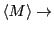

Now, we will consider a more interesting Ising system; namely, that of interacting spins on a 2d square lattice. What do we mean by interacting? We mean that the Hamiltonian depends on pairs of spins:
Think about this Hamiltonian. It says that energy is minimal when all
 spins have the same alignment, either all up or all down. Imagine
a microscopic observable called the magnetization, or average
spin orientation,
spins have the same alignment, either all up or all down. Imagine
a microscopic observable called the magnetization, or average
spin orientation,  :
:
| (78) |
Our physical intution tells us that as 0,  1, and as , 0. The fascinating thing about an Ising magnet is that there is a finite temperature called the critical temperature, . If we start out with a ``hot'' system, and cool it to just below , the absolute value of the magnetization spontaneously jumps from 0 to some finite positive value. In other words, the system undergoes a phase transition from a disordered phase to a partially ordered phase. A Metropolis Monte Carlo simulation can allow us to probe the behavior of an Ising system and learn how the system behaves near criticality. The rest of this case study will be devoted to showing you the inner workings of a C program which simulates the Ising lattice using Metropolis MC, as a first implementation of this technique. In the suggested exercises appearing at the end of this case study, you will modify this code slightly to compute averages values of certain observables.
But first, I recommend a visit to the website of Peter Young at UC Santa Cruz (http://bartok.ucsc.edu/peter/java/ising/ising.html). You will see a Java implentation of a Monte Carlo simulation of a 2-dimensional Ising magnet (One of many on the web; google ``ising simulation'' and you'll get a nice sample.) This is a fun little Java applet that lets you play with an Ising system. You can change the temperature of the simulation: making it cold will ``freeze'' the system, and making it hot ``melts'' it. Near the critical temperature, , relatively large regions of mostly-up spins compete with regions of mostly down spin. In one of the exercises, we'll learn how to measure an observable called the correlation length, which characterizes the size of these domains and is a useful signature of criticality.